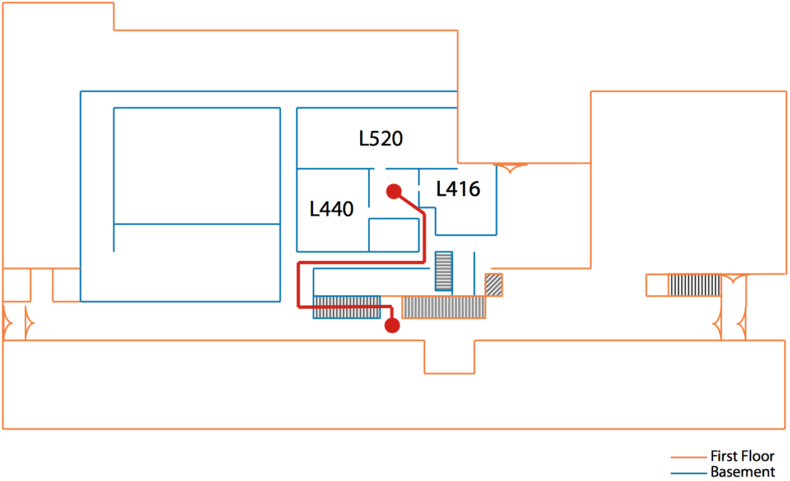

CSE Workshops in Python, Spring 2016
This project is maintained by uiuc-cse
All workshops will be held in the EWS computer laboratory, L440 Digital Computer Laboratory. There is no sign-up for this series—walk-ins are welcome and encouraged!
L440 DCL is a little tricky to find if you haven't been there before. It's located in the basement, and can be accessed by going down the main staircase in DCL and turning right.

For most of the lessons, we will require outside modules. We will provide a Python virtual environment in class, which will run on the EWS machine and let you access all of the modules required. Anaconda is an excellent Python distribution for your personal machine.
source /class/cs101/etc/venv/cse/bin/activate /class/cs101/etc/venv/cse/
cd
cd Desktop
jupyter notebook
numpy, scipy)matplotlib)pandas, seaborn)pdb, etc.)f2py)